Home
158 Pages
Introduction
Confoederatio is a comprehensive R&D studio focused on the production of scientific tooling, technical infrastructure, complex strategy/simulation games, and applied knowledge and modelling. It is split into three main divisions: Confoederatio, Artistic Division (CAD); Confoederatio, Research Division (CRD); and Confoederatio, Technical Division (CTD). The physical and digital holdings of historical and scientific documents are covered under the Preservés des Confoederatio or Preservés generally. These documents are outlined in the given gazetteer.
All datasets and documents, alongside accompanying research notes and code, are made available in the public interest even if they may not be fully documented. This website is currently under construction; and as such, some fundamental projects may currently be missing documentation.
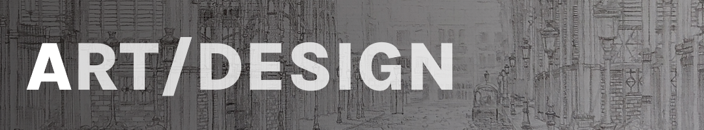 | 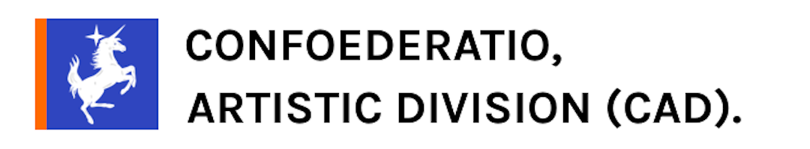 |
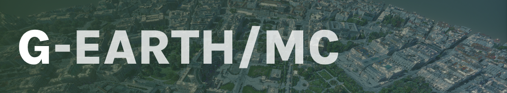 | 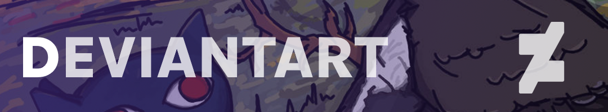 |
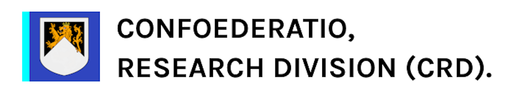 | 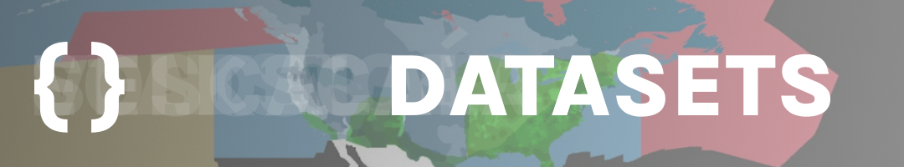 |
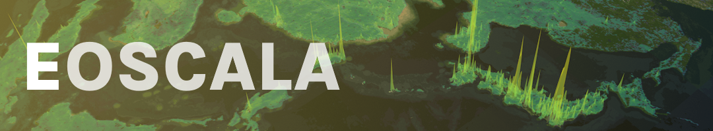 | 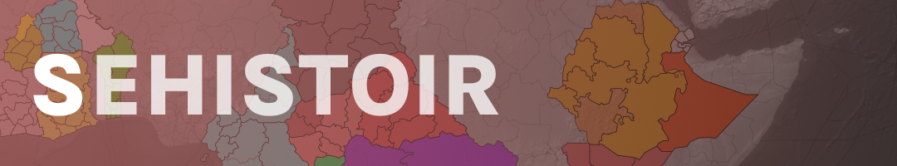 |
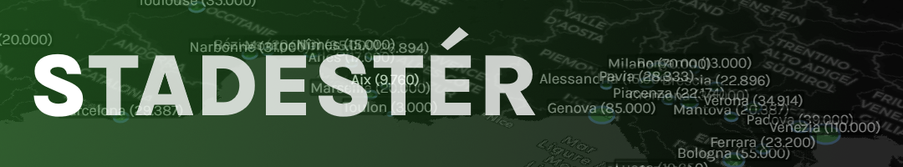 | 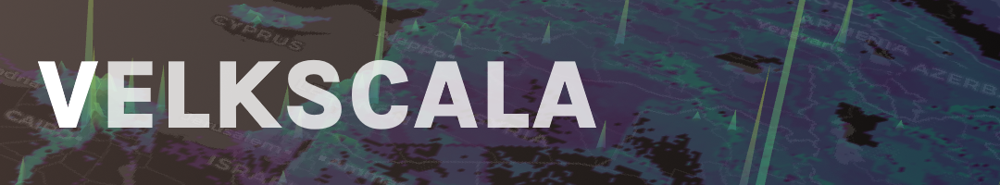 |
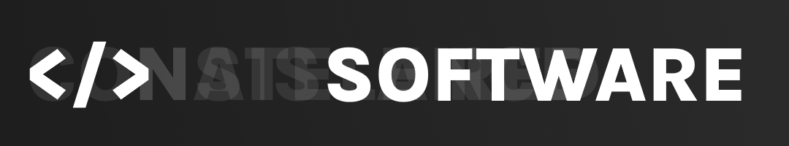 | 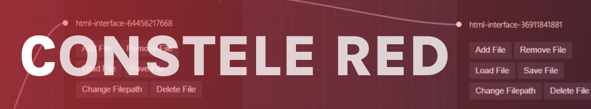 |
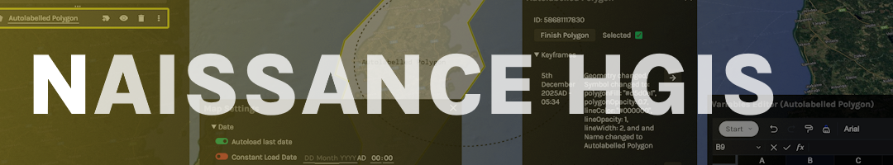 |
Subnavigation by Division:
CAD:
- Artwork: Graphic Design | Icons and Assets | Traditional Art
- Digital Projects: G-Earth.MC
- Web Presence: Confoederatio Website
CRD:
- Datasets: Atlas | Eoscala | Sehistoir | Stadestér | Velkscala
- Software: Constele Red | CRD (Confoederatio, Research Division)/Documentation/Software/Naissance/Naissance
- Legacy (Software): CRD (Confoederatio, Research Division)/Documentation/Legacy/Naissance/Naissance | Project Humanity
CTD:
- Game Engines: Analytical Engine | Gamechanger
- Games/Game-related Projects: Balance of Power | Triumph & Tragedy II
- Technical Projects: UF | Vercengen
- Legacy (Games): 11.59 (AOC2) | 11.59 (AOC3) | Triumph & Tragedy I
- Legacy (Technical Projects): BrowserUI | Legacy Geospatiale | Legacy UF | Scriptly IDE
Preservés des Confoederatio:
- Digital Archives: Digital Archives
- Physical Archives: Physical Archives
Yearly Plans:
- 2026: Confoederatio26